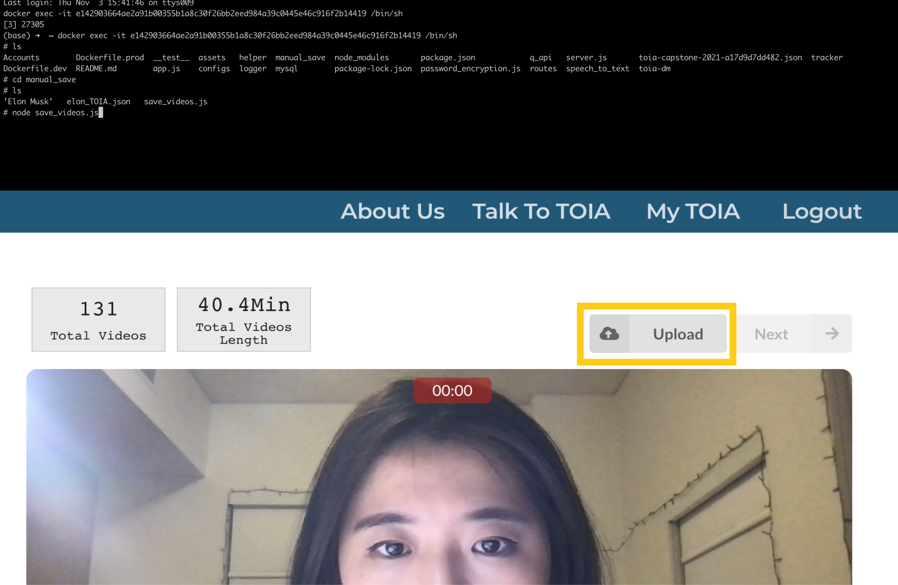

Elephant in the Room is a creative application of LLM technology to modern video consumption. Featuring an AI-driven video dialogue system powered by OpenAI’s GPT-3, it turns passive viewing into interactive conversation. The platform provides a safe space for users to ask questions about intimate topics such as childbirth, sex, and death, free from judgment. Engage in meaningful, perspective-expanding dialogues with pre-recorded videos of others.
Video Demo DocumentationUsers can select the topic they wish to interact with and have a conversation with the recordings via voice or text input.
How does one come to accept death? How has your body changed after giving birth? It is ironic that some of the most fundamental and universal human experiences, such as birth, death, and sex, are often shied away from and seldom discussed. Despite living in a hyper-connected world, we still struggle to find the right person to talk to about some of the most intimate and important topics. Even with the ability to share information and perspectives beyond physical boundaries thanks to Google and YouTube, the interaction is often distant, one-sided, and unempathetic, leaving us with unsatisfying answers.
The Elephant in the Room was inspired by various types of new media artworks and even commercial products. For example, Dimension in Testimony is an interactive biography of genocide survivors installed at the Dallas Holocaust Museum that showed me the potential of immersive video technology. Additionally, the video installation Are You Online Now? by !Mediengruppe Bitnik demonstrated how artificial intelligence can facilitate empathetic human conversations that involve humor, sarcasm, and intricate emotions. Furthermore, the purpose-driven card game We're Not Really Strangers emphasizes the importance of breaking down conversation barriers and engaging in conversations outside of one's comfort zone.
Time Offset Interaction Application (TOIA), developed by NYU CAMeL Lab, is an open-source web application that offers similar interactions to Testimony of the Holocaust. However, it allows anyone online to interact with pre-recorded videos of people and even create their own avatars. On the left, you can see me recording and creating an avatar. On the right, you can see me interacting with the video avatar of myself. You can try it out here.
Initially, I had the idea of creating a tool that enables people to communicate with those outside their immediate social circles, including celebrities. As a proof of concept, I transformed an hour-long Ted Talk interview of Elon Musk into an interactive video avatar. This avatar allows users to engage in a conversation with pre-recorded videos of Elon. For instance, when I asked, "Hey Elon, do you have any advice for me?" the video interface returned a pre-recordings of Elon saying, "Try to be useful. It's hard to be useful."
Wrote a script that uses the Pytube API to download videos and their transcriptions from YouTube.

Trimmed and edited the video using the Davinci Resolve video editor to create shorter, "answerable" clips.

Created a JSON file that contains the metadata required to store and
retrieve each clip within the video dialogue system

Scripted a file to upload multiple videos to TOIA via the command line. Additionally, I added a feature to enable uploading videos via drag and drop using the upload button.
For the system architecture, I focused on leveraging TOIA's existing features, such as the use of an Automatic Speech Recognition (ASR) function to receive the user's voice input, and a dialogue manager system that returns the most relevant video from the database based on the user's utterances. Using these elements and the React.JS library, I designed and developed "Elephant in the Room" as illustrated below:
On the landing page (left), players are presented with choices and descriptions of streams to interact with. Upon clicking a specific topic, the player is directed to an interaction page where they can have conversations with videos in the database via text or voice (right).
While curating videos on the topic of death, I faced challenges such as a lack of content on such topic and the need to find specific Q&A interview formats. However, I found selected videos such as "Three Dying People Talk About Death" by CUT, which featured three individuals diagnosed with chronic diseases, and "Old(er) People Talk About Death," which featured Singaporean seniors sharing their thoughts on the finality of life, to be invaluable.
To create short clips of these videos, I used DaVinci Resolve and labeled each clip with question-answer pairs. These pairs were transformed into 1024-dimensional vector embeddings using the 'text-search-ada-doc-001' model. The embeddings are then analyzed for similarity with user input and activated by the dialogue manager.
The system supports two types of interaction: text and voice. Users can type questions using the text input field or ask via voice, which is automatically converted into text using speech recognition technology. The input is then compared to vector embeddings, and the dialogue manager proposes the most accurate answer if the similarity between the user input and the video data is above 0.29. If the similarity is below this threshold, a video of the "I don't have an answer for that question" type is returned instead. OpenAI's GPT-3 models are used to perform the retrieval task.
After creating a "Death" discussion page with 62 videos, I conducted the first round of user testing to observe the types of questions users asked and their methods of interaction.
First, users were drawn to click on name icons. To make it more interactive, I added a feature where hovering over an icon displays a one-line introduction of the character. Clicking on the icon allows users to interact with that specific person. For example, hovering over the Layla icon displays a one-liner description of her as "a woman with end-stage renal disease." If clicked, Layla's name is automatically added to the input, allowing users to interact with her videos.
Secondly, I noticed that users found it unintuitive to mute and unmute ASR using a button. To address this, I added a new feature where users can hold the spacebar to speak, similar to the voice message feature in social media.
Finally, I replaced the clickable question suggestion card with a simple question list. This list provides interesting prompts for users to ask themselves, making the interaction more engaging and solving the issue of making it seem less real-time.
After creating a discussion page that covered topics such as birth, death, and sex, I conducted the second round of user testing. This time, the focus was on evaluating the quality of user interaction.
No-Answer Type Responses
Users assumed that the system is broken if they ask a question and receive no answer. To address this issue, I have recorded "No-Answer Type" responses to provide an explanation for no retrieval.
Deprioritize Already Played Videos
The repetition of videos was a problem. The current answer retrieval system treats each input as independent of previously asked questions, so the same videos can be played consecutively. To address this issue, the dialogue manager was modified to cache the last 10 videos played and prioritize answers that do not involve these videos.
The cache is cleared every 15 minutes, which is the expected interaction time per person for one topic.
Physical Cards
Recognizing that users struggle to come up with questions that can spark interesting conversations, I created a physical deck of cards that can help delve deeper into conversations.
Elephant in the Room is housed in a private booth. While scouting for a location, I came across Professor Laura Schneider's no-longer-used telephone-booth-like structure, which she had previously used for her "Earliest Memory Archive" project.
After successfully deploying the locally hosted project online, I connected a Mac mini to power the system and set up keyboard, microphone, and mouse for users to navigate the screen and interact.
It was important to consider the potential impact of the content on visitors. Conversations about death, sex, and birth can be triggering for some individuals. After seeking cultural advice, I decided to create a friendly content warning sign to display outside the booth.
On the opening day, I found myself having to convince people to “Talk” to videos. To address this, I created a how-to video that plays in a loop. First-time visitors to the booth can watch this video and quickly understand how to use the new video technologies that allow them to converse with videos.
Truly Cutting-Edge, Deeply Human
Despite being a highly technical project powered by machine learning and artificial intelligence technology, Elephant in the Room has deepened my understanding of human thought, communication, and connection.
Inclusiveness and Knowledge Gap in the World of AI
Although I strived to include a range of perspectives from individuals of different races, stages of life, and experiences when curating videos, the opinions shared in the stream are predominantly from English-speaking individuals from financially comfortable backgrounds. This lack of diversity limits the range of perspectives. Additionally, the focus of AI on facilitating English conversations has highlighted a growing knowledge gap between English speakers and non-English speakers.
Compassionate Artificial Intelligence
Amit Ray, the author of Compassionate Artificial Intelligence, notes that "as more and more artificial intelligence enters the world, more and more emotional intelligence must enter into leadership" (Ray). Elephant in the Room resonates with this belief. By using cutting-edge AI technology, it fosters compassionate and long-overdue conversations that are often avoided, addressing one "elephant in the room" at a time.
Full Integration into YouTube
Looking ahead, I aim to create a fully integrated system that retrieves relevant sections of videos directly from YouTube based on user input. Users will be able to ask questions and receive answers from a large YouTube database through a search process similar to Google search, thus broadening the scope of conversation. Achieving this will involve tackling challenging tasks in natural language processing (NLP), such as argument mining.
LinkedIn Interactive Biography
This technology is not only suitable for artistic purposes but also has commercial applications, such as integration into LinkedIn profiles. For instance, instead of merely reading a few lines of description or viewing a profile image, this technology could enable users to conduct interviews directly on LinkedIn.